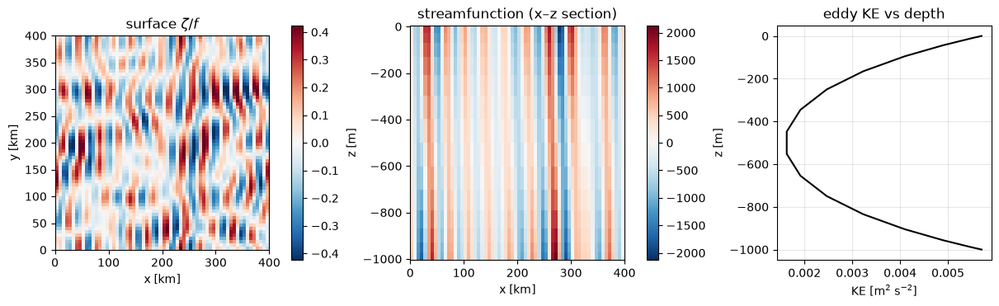

Continuous-Stratification Baroclinic Instability
This example runs the
ContinuousQGModel, which resolves a
continuous vertical coordinate with a general stratification
\(N^2(z)\) using Chebyshev collocation — unlike the layered models, which
discretize the vertical into a few layers. We use the classic Eady
setup (uniform \(N^2\), a vertically sheared mean flow \(U = \Lambda z\)),
which is baroclinically unstable, and look at the vertical structure
of the resulting flow, which is what this model adds.
The inversion runs in 64-bit precision regardless of the chosen
Precision, so enable JAX’s 64-bit support.
import functools
import math
import matplotlib.pyplot as plt
import jax
jax.config.update("jax_enable_x64", True)
import jax.numpy as jnp
import numpy as np
import pyqg_jax
Construct the Model
The vertical is resolved with nz Chebyshev points over a depth H.
We set a uniform buoyancy frequency and a uniform vertical shear
(Eady). The background velocity profile is sampled on the model’s own
vertical grid model.z.
DT = 200.0
T_MAX = 4 * 86400.0 # 4 days
H = 1000.0
N_BV = 1e-3 # buoyancy frequency
SHEAR = 8e-4 # U = SHEAR * z
# build once to read the vertical grid, then set the background U(z)
grid_model = pyqg_jax.continuous_model.ContinuousQGModel(
nx=64, nz=16, L=4e5, H=H, f=1e-4, beta=0.0, N2=N_BV**2,
precision=pyqg_jax.state.Precision.DOUBLE,
)
stepped_model = pyqg_jax.steppers.SteppedModel(
pyqg_jax.continuous_model.ContinuousQGModel(
nx=64, nz=16, L=4e5, H=H, f=1e-4, beta=0.0, N2=N_BV**2,
U=SHEAR * grid_model.z,
precision=pyqg_jax.state.Precision.DOUBLE,
),
pyqg_jax.steppers.AB3Stepper(dt=DT),
)
stepped_model
SteppedModel(
model=ContinuousQGModel(
nx=64,
ny=64,
nz=16,
L=400000.0,
W=400000.0,
H=1000.0,
f=0.0001,
g=9.81,
beta=0.0,
N2=f64[16],
U=f64[16],
rek=0.0,
filterfac=23.6,
precision=<Precision.DOUBLE: 2>,
),
stepper=AB3Stepper(dt=200.0),
)
Note
The Chebyshev grid clusters points near the top and bottom, which makes the vertical operator stiff — this model needs a smaller time step than the layered models.
Run From a Small Perturbation
model = stepped_model.model
key = jax.random.key(0)
q0 = 1e-7 * jax.random.normal(key, (model.nz, model.ny, model.nx))
q0 = q0 - q0.mean(axis=(-2, -1), keepdims=True)
init_state = stepped_model.initialize_stepper_state(
model.create_initial_state(key).update(q=q0)
)
@functools.partial(jax.jit, static_argnames=["num_steps"])
def roll_out(state, num_steps):
final, _ = jax.lax.scan(
lambda c, _: (stepped_model.step_model(c), None), state, None, length=num_steps
)
return final
final_state = roll_out(init_state, math.ceil(T_MAX / DT))
full = stepped_model.get_full_state(final_state)
Vertical Structure
The payoff of resolving the vertical: we can look at the flow as a function of depth. The left panel is the surface relative vorticity (\(\zeta/f\)); the middle panel is a vertical section of the streamfunction (note the phase tilt with depth — the signature of baroclinic growth); the right panel is the horizontally-averaged eddy kinetic energy as a function of depth, concentrated near the upper and lower boundaries — the symmetric edge-wave structure of the Eady problem.
km = 1e-3
L = model.L
z = np.asarray(model.z)
x = (np.arange(model.nx) + 0.5) / model.nx * L
# surface relative vorticity / f
zeta_surf = np.asarray(
jnp.fft.irfftn(-model.wv2 * full.ph[0], s=(model.ny, model.nx), axes=(-2, -1))
) / model.f
# vertical section of streamfunction through mid-domain
psi = np.asarray(full.p)
section = psi[:, model.ny // 2, :]
# eddy KE profile vs depth
u = np.asarray(full.u)
v = np.asarray(full.v)
ke_z = 0.5 * (u**2 + v**2).mean(axis=(-1, -2))
fig, axs = plt.subplots(1, 3, figsize=(12, 3.6), layout="constrained")
amp = float(np.percentile(np.abs(zeta_surf), 99))
im = axs[0].imshow(
zeta_surf, cmap="RdBu_r", vmin=-amp, vmax=amp, origin="lower",
extent=(0, L * km, 0, L * km),
)
axs[0].set_title("surface $\\zeta/f$")
axs[0].set_xlabel("x [km]")
axs[0].set_ylabel("y [km]")
fig.colorbar(im, ax=axs[0])
samp = float(np.abs(section).max())
im = axs[1].pcolormesh(
x * km, z, section, cmap="RdBu_r", vmin=-samp, vmax=samp, shading="auto"
)
axs[1].set_title("streamfunction (x–z section)")
axs[1].set_xlabel("x [km]")
axs[1].set_ylabel("z [m]")
fig.colorbar(im, ax=axs[1])
axs[2].plot(ke_z, z, "k-")
axs[2].set_title("eddy KE vs depth")
axs[2].set_xlabel("KE [m$^2$ s$^{-2}$]")
axs[2].set_ylabel("z [m]")
axs[2].grid(True, alpha=0.3)

The growth rate, vertical structure, and most-unstable scale all follow
the analytic Eady solution — see
stability_analysis()
for the linear dispersion relation. A general N2 profile (for example
surface-intensified stratification) can be passed instead of the
uniform value used here.